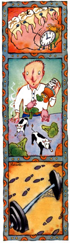

To Your Health
Of grinds, greens and simply going for a stroll.
When it concerns the fitness of body, mind or spirit, the editors of American Health are there, staying on top of up-to-date medical research, separating fad from fact and helping you preserve and improve life's most precious gift-your good health. Here are just a few items culled from recent and upcoming issues, including another connection between nutrition and cancer prevention.
Bruxer Busters
Bruxers are people who clench, grind and gnash their teeth, accelerating tooth wear and frequently giving themselves broken fillings and headaches. University of Florida psychologist Jeff Cassisi and other researchers at the University of Missouri tracked 10 heavy-duty bruxers who wore nighttime sensors attached to their cheeks for two weeks. Whenever the sensor detected extreme tension in the chewing muscle (the masseter), a bedside alarm went off, which the bruxer had to get up and turn off: As a result, those bruxers reduced nocturnal gnashing for two weeks after treatment. Cassisi hopes the alarm can permanently change behavior, eliminating the need for the traditional antibruxing plastic mouthpiece.
A Folic Acid/B 12 Connection
Beta-carotene has gotten a lot of press as a cancer preventive, but another healthboosting ingredient of leafy green vegetables is folic acid.
A 1985 USDA survey found that the diets of women average only 51% of the RDA for folic acid, of men 76%. Furthermore, studies have found that smokers with injured lung cells have particularly low levels of both folic acid and B 12 . These deficiencies may lead to DNA mutations, making lung cells even more susceptible to such carcinogens as cigarette smoke.
More recently, nutrition scientist Douglas Heimburger, M.D., and colleagues at the University of Alabama Medical Center in Birmingham studied 73 male heavy smokers with potentially precancerous lung cells. Half the group received daily doses of 10 mg folic acid (25 times the U.S. RDA) and 500 mcg B 12 (83 times), and the other half were given placebos. At four months, six of the 37 untreated controls spontaneously showed reduced lung-cell injury, but two-and-a-half times more of the treated men-14 of 36-had reduced injury.
Heimburger cautions that though the results are encouraging, smokers shouldn't use supplements as an excuse not to quit. "The benefits of quitting smoking far outweigh those of dietary changes," he stresses.
Folic acid also protects against birth defects, and another Alabama study found that 22 women with cervical dysplasia (potentially premalignant cells) improved when treated with folic acid alone, while a control group stayed the same or worsened.
The best natural sources of this helpful vitamin are dark-green leafy vegetables such as spinach and romaine lettuce, as well as broccoli, oranges and liver.
Take a Walk
It's long been doctrine that you have to exercise hard 20 to 60 minutes a day, three to five times a week, to reap many health benefits. Living up to that standard is so intimidating that a lot of people don't even try. Among those who agree to start an exercise program, half don't make it past six months. (Studies show that 25% of these dropouts don't even appear for their first session! )
But workouts don't have to be difficult to be healthful. Dr. James M. Rippe, cardiologist and a leading physiology researcher at the University of Massachusetts medical school, recently reported on some significant research breakthroughs. He's found that you can reap immediate benefits from less exercise than was previously believed.
For example, mild exercise-such as walking-can reduce tension, anxiety and blood pressure on the first day, and, over a moderate distance (about three miles), you get about the same relaxing benefits whether your walking speed is fast, medium or slow.
Additionally, in a 12-week study Rippe conducted with 23 women of average fitness, as little as 12 minutes of stationary cycling done three times a week produced a significant improvement in maximum oxygen consumption (VO 2 max), the measure of aerobic conditioning. In fact, a 50% boost in VO 2 max occurred within two weeks. The results suggest that average women-and probably men, as well-can develop a healthier heart and body without sweaty efforts.
|
 |
|
|